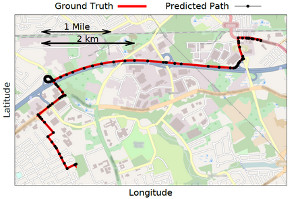
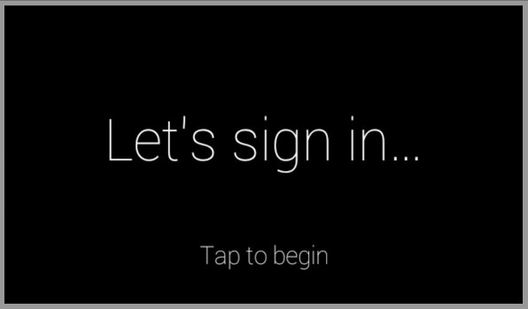

<link rel="import" href="bower_components/polymer/polymer.html">
<link rel="import" href="bower_components/core-icon-button/core-icon-button.html">
<link rel="import" href="post-card.html">

<polymer-element name="projects-cards">

  <template>
    <post-card>
	
	<h2>DriveSafe LLC</h2>
	<p>The brainchild of Jake Steinerman, and a project that I joined in order to occupy my time. DriveSafe was one of the first apps to make use of the Google Glass GDK. When we saw articles about DriveSafe in PCWorld, Wired, and even the print-version of USA Today, we knew we were onto something important.</p>

	<p>Thanks to DriveSafe, Jake and I were invited to give courses at the Wearables Devcon and the Mobile+Web Devcon in 2014. DriveSafe is an ongoing project, with some large updates on the way. In late September, DriveSafe strategically partnered with Tranztec Solutions and was exhibited at an automotive technology tradeshow. </p>
	<p> For more information, see the <a target='_blank' href="http://www.drivesafeforglass.com">DriveSafe website</a></p>
     </post-card>

     <post-card>
	     
	     <h2>Exlon Algorithm (Patent Pending)</h2>
	     <p>An algorithm I designed while a high school Junior. The Exlon algorithm is a rethinking of feature detection in images. It is focused on taking full advantage of multi-core configurations by being highly parallelized. For this reason, on embedded systems with slow-speed multi-core processors, the Exlon algorithm tends to be significantly faster than traditional methods.</p>
	     <p>The patent application is visible <a target='_blank' href="https://www.google.com/patents/US20130279749?dq=victor+kaiser-pendergrast&hl=en&sa=X&ei=6DQ0VPqCJqnCsAScvILwDg&sqi=2&pjf=1&ved=0CB0Q6AEwAA">here</a></p>
     </post-card>

     <post-card>
		<h2>Elementary Android App Development</h2>
		
		<p>Written during an independent study in my last year of high school, Elementary Android App Development covers all the basics of Android application development and design - assuming only that it's readers have a working knowledge of Java. The book includes plenty of sample code, and explains everything from "Hello, World" to interface design, to multithreading. </p>
		<p>Available on <a target='_blank' href="http://www.amazon.com/dp/1481931350">Amazon</a></p>

     </post-card>

     <post-card>
	    
	    <h2>Elastic Pathing Research</h2>
	    <p>A research project I worked on under the direction of Proffessor Janne Lindqvist. The goal of this project was to construct an algorithm that shows thatsimply knowing one's instantaneious speed along a driving trip (not GPS data) is enough to predict where one is driving. Our Elastic Pathing paper was a Best Paper Nominee at Ubicomp 2014, and we are working on a journal submission now.</p>
	    <p>To see more, visit the <a target='_blank' href="http://www.elasticpathing.org">Elastic Pathing Webpage</a></p>

     </post-card>

     <post-card>
	     
	     <h2>GlassAuth and GlassSettings</h2>
	     <p>The GlassAuth library was the first OAuth sign in implementation for Google Glass - released months before Google's own implementation. GlassAuth has been shown and mentioned at wearable technolgoy conferences by myself and other presenters</p>

	     <p>GlassSettings is a library that is able to quickly and easily build preference screens that hook into Android's SharedPreferences for Google Glass. It comes with several built in preference types: including checkboxes, selecting from a list, measuring head tilt, and voice input. Additional types of preferences can be easily created by implementing a simple abstract class.</p>
	     <p>The GlassAuth library is on GitHub <a target='_blank' href="https://github.com/victorkp/GlassAuth">here</a></p>
	     <p>A sample application using GlassAuth (including a server) is <a target='_blank' href="https://github.com/victorkp/GlassWebNotes">here</a></p>


     </post-card>

     <post-card>
	
	<h2>BadgIn Attendance Tracker</h2>
	<p>A time clock for the modern era! BadgIn was a project intended for my own use that tried to solve the problem of taking attendance at recurring club meetings. Members were issued NFC (tap-and-go) cards; in order to sign in and out, all they had to do was tap their card on the back of a Nexus 7 set up at the door.  </p>
	<p>Additionally, BadgIn can display detailed attendance statistics, export attendance data as a spreadsheet, and even automatically backup to Dropbox.  </p>
	<p>Available on <a target='_blank' href="http://play.google.com/store/apps/details?id=com.victor.punch.card">Google Play</a></p>
     </post-card>

     <h3>Projects originally for Personal Use</h3>

     <post-card>
	     <h2>Kaiser Gmail Client</h2>
	     
	     <p>I was looking for a quick way to send emails (preferably from the command line). Disappointed I didn't find anything along the lines of what I wanted, so I began working on Kaiser. Kaiser is a command-line Gmail client written completely in Perl. Although it is not the most feature-packed email system, it has basic functionality such as sending mail, writing drafts, reading messages, and the ability to switch among multiple accounts. Kaiser was designed to run on RedHat systems, although changing the dependencies can allow it to run on Debian as well.</p>
	     <p>Kaiser can be found on <a target='_blank' href="https://www.github.com/victorkp/kaiser-gmail-client">GitHub</a></p>
     </post-card>

     <post-card>
	     <h2>Gnome Hot Edges</h2>
	     
	     <p>An extension for Gnome Shell to add some additional functionality intended for touchscreens. With Gnome Hot Edges installed, simply swipe from the top of your touchscreen to show all windows, or swipe from the bottom of the screen to show your notification tray. Scroll alongside the right edge to switch workspaces up or down.</p>
	     <p>Available to install from <a target='_blank' href="https://extensions.gnome.org/extension/798/overview-edge-gesture/">Gnome Extensions</a></p>
	     <p>Code is on <a target='_blank' href="https://www.github.com/victorkp/GnomeHotEdges">GitHub</a></p>

      </post-card>

  </template>

  <script>
  	Polymer({});
  </script>

</polymer-element>
